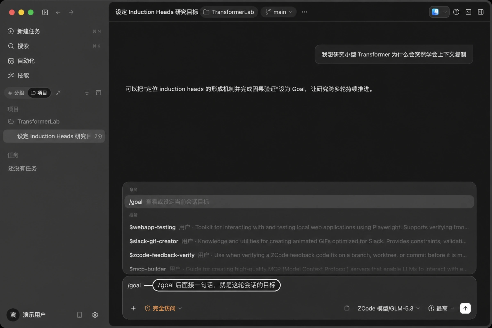
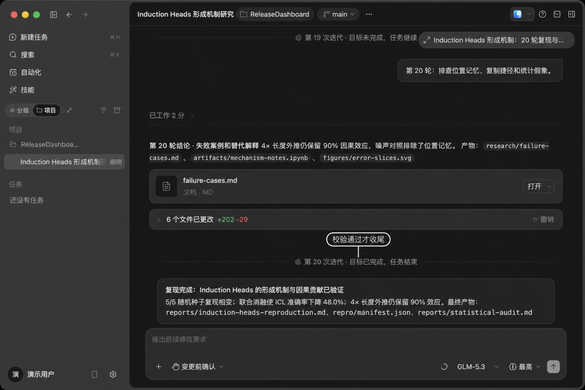
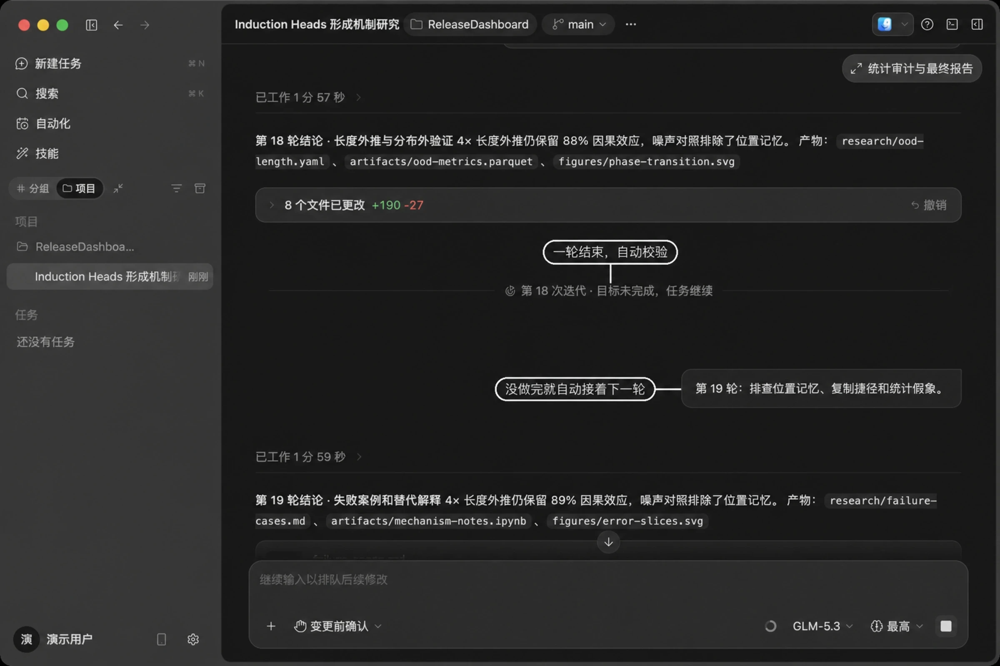
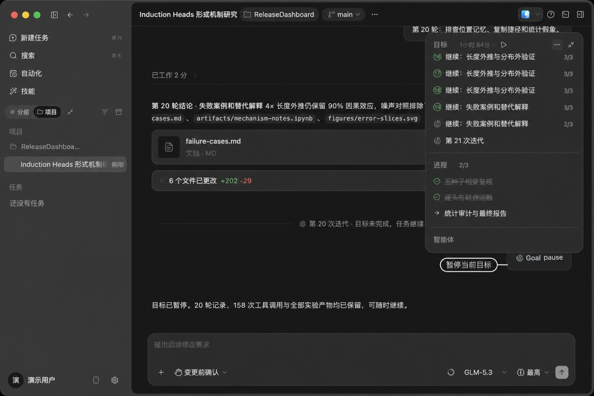
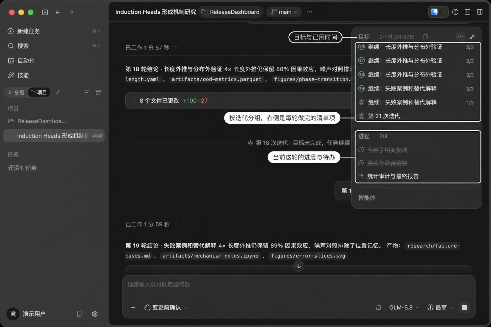

核心功能
任务与目标模式
面对需要跑很久的复杂任务，可以用 /goal
给当前会话设一个目标。设定之后，Drora Agent
会围绕这个目标持续推进：每一轮结束都会自动校验目标是否达成，没达成就自己接着下一轮，确认完成才收尾——把「盯着
Agent 反复说继续」变成「设一个目标，等结果」。
适合什么任务 ：一句话说得清、但要多轮才能做完的活，例如——
- 「重构整个模块并保持测试通过」
- 「修复所有 TypeScript 编译错误」
- 「把这个页面的 Lighthouse 性能分提到 90 以上」
目标描述越具体、越可校验，每轮的判断就越准。比起「优化一下性能」，「把
pnpm test
跑通，并且首屏加载控制在 2 秒内」这样的说法效果会好很多。
设定目标
在输入框里输入 /goal
，后面接一句话，就是这轮会话的目标。也可以先输入 /
，在建议面板里选 goal。

一个会话同一时间只有一个目标。常用写法：
/goal 查看当前目标
/goal <目标描述> 设定目标；已经有目标时会替换掉它
/goal replace <目标> 明确替换当前目标
/goal pause 暂停
/goal resume 恢复
/goal clear 清除headless 模式下也可以在单次运行中直接设定目标：
drora -p "继续修复剩余的类型错误" --target "类型检查全部通过" --target-replace目标设定后，摘要面板会出现目标卡片，显示目标描述和已用时间，并标注当前状态（进行中 / 已暂停 / 预算受限 / 已完成）以及 token、时间用量和已进行的迭代次数。下面按迭代分组，列出每一轮做完的清单项；最下方是当前这一轮的进度和待办。每轮的标题来自上一轮校验给出的下一步动作，所以顺着往下看，就是这个任务一路是怎么推进的。
一件小事值得知道：清单项归属于它第一次出现的那一轮，哪怕是在后面几轮才做完，也仍然显示在原来那一组里。这样回头看每轮的实际产出才不会错位。
每轮自动校验
一轮结束后，Drora 会单独做一次校验，判断目标有没有达成。


没达成时，会给出下一步该做什么，并自动开启下一轮——不需要你手动追问「继续」。
达成时才会收尾，输出总结。
会话时间线中的每次校验以分隔条呈现：
- 目标校验中
- 目标未完成，任务继续
- 目标已完成，任务结束
校验看的是实据。写了一份计划、列了一份待办清单、跑了很久，或者给出一段听起来很像结论的回复，这些本身都不算数；要有改出来的文件、命令输出、测试结果这类能核对的东西才算。另外，只要还有待办没做完，校验就不会判定完成，而是优先把它做完。完成与否由校验裁定，模型不能自行宣布完成。
中途介入
目标设定后随时可以调整。最省事的办法是直接用自然语言告诉 Agent 你的想法——换个方向、先停一下、这个目标不要了，它会据此替换、暂停或清除，不用记命令格式。

暂停不会丢东西：已经跑过的轮次、工具调用记录和产出的文件都在，摘要面板顶部的图标会变成继续，随时可以接着跑。中途按停止键取消任务时，目标也会自动暂停，不会在你没留意的时候继续运行。
关掉会话再打开也一样。目标状态由系统保存，重新进入这个会话时它还在，可以从上次的地方继续。
目标会在以下几种情况下停止自动推进：校验判定完成；你主动暂停或清除；你中断了正在推进的一轮，校验随之中止，等待你的下一条指令；以及跑到为这个目标配置的用量上限。
什么情况下设不了目标
有两种情况会被拦下来，界面上会直接说明原因。
计划模式专注于先把方案讨论清楚，不会自动往下执行，所以和目标模式的自动续跑是冲突的，需要先切回其他执行模式。任务正在跑的时候也设不了目标，等这一轮跑完，或者先按停止。
与执行模式搭配
目标模式和 执行模式 管的是两件事：目标决定「做到什么程度才算完」，执行模式决定「过程中多少操作需要你确认」。
长目标任务建议搭配 完全访问 或 自动编辑 ，中途打断少，迭代会更连贯。反过来，如果这个任务会改动重要文件，用 变更前确认 也没问题，只是需要你在旁边盯着确认。
下一步
- Drora Agent ——了解提问入口、模型选择与执行模式。
- 任务与文件管理 ——用任务分组和文件树管理你的工作台。
- 技能与斜杠命令 ——将常用提示词保存为可重用的命令。
